< Final-Year IT Student />
Sinh viên công nghệ năm cuối định hướng Full-stack Engineer, tập trung vào trải nghiệm người dùng, phát triển giao diện React và tích hợp REST API. Tôi đang mở rộng kỹ năng về backend, database, cloud services, cùng cách làm việc theo Agile/Scrum và cộng tác trong team với tinh thần học hỏi liên tục.
React Ecosystem
Bắt đầu với PHP thuần để hiểu rõ vòng đời request-response, routing cơ bản và cách web server xử lý giao tiếp với cơ sở dữ liệu trước khi tiếp cận các framework hiện đại.
Tìm hiểu sâu về lập trình hướng đối tượng, làm quen với backend Java Spring Boot và các khái niệm bảo mật, API, dữ liệu để dễ dàng phối hợp với team backend trong các dự án tích hợp thực tế.
Sử dụng React 18, quản lý trạng thái bằng Zustand, xây dựng tính năng tự động hóa bằng node-schedule ở backend và đưa mô hình xử lý AI đa tầng (multi-tier fallback) chịu lỗi cao vào ứng dụng thực tế.
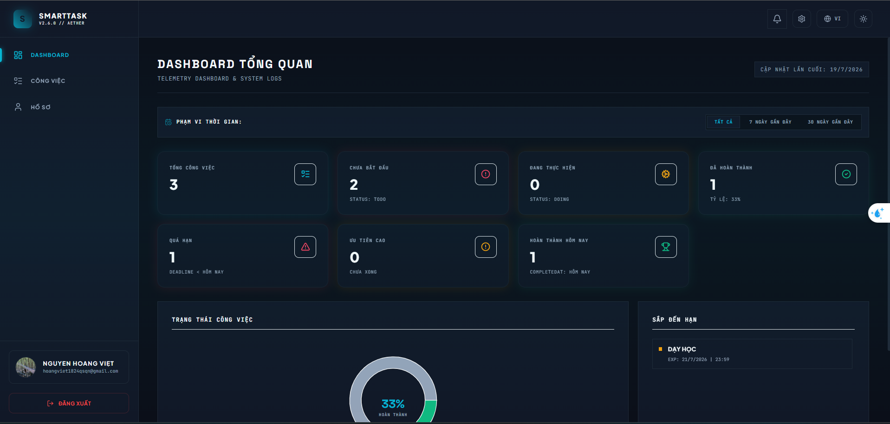
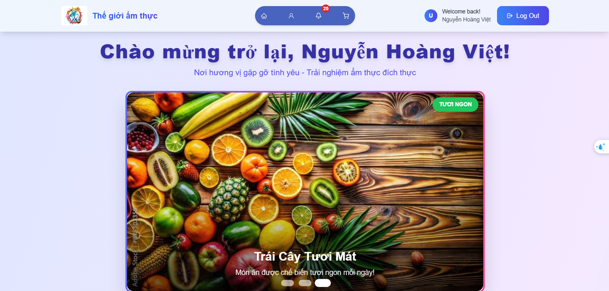
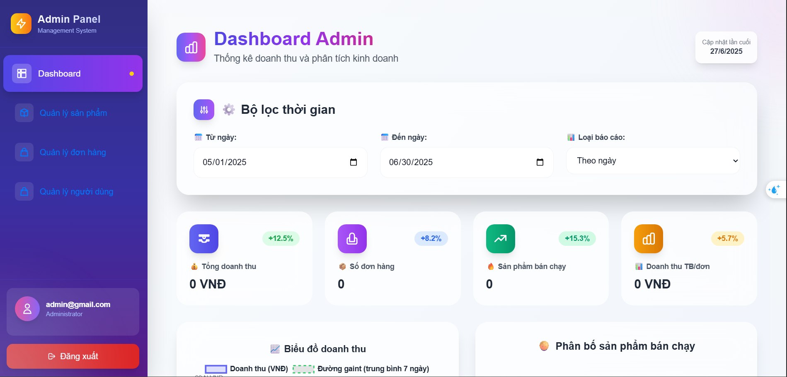
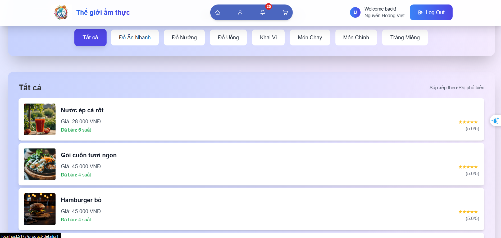
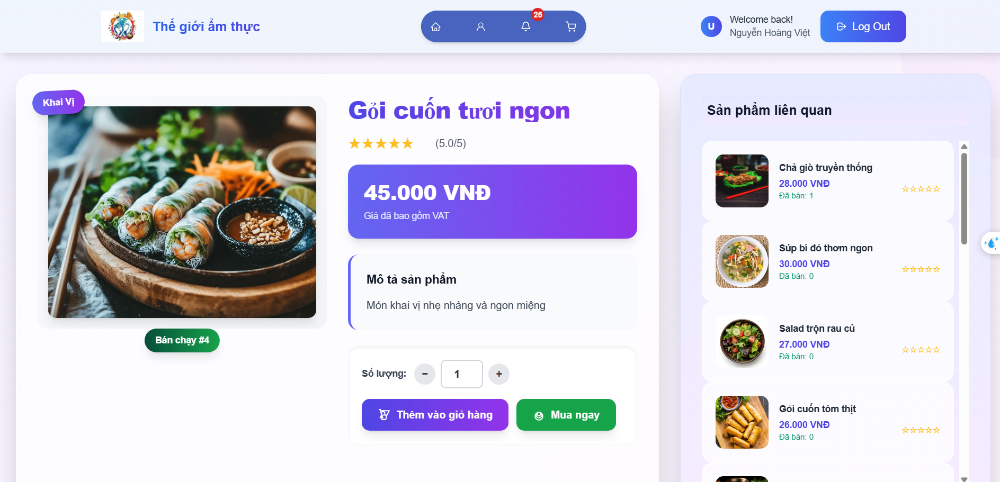
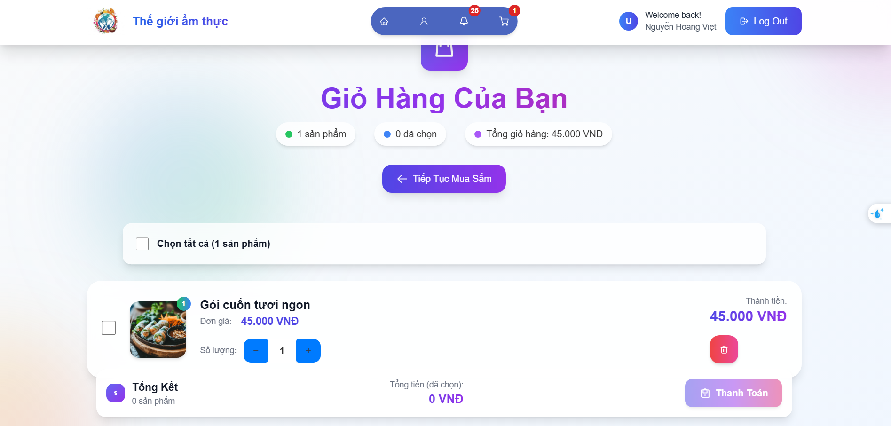
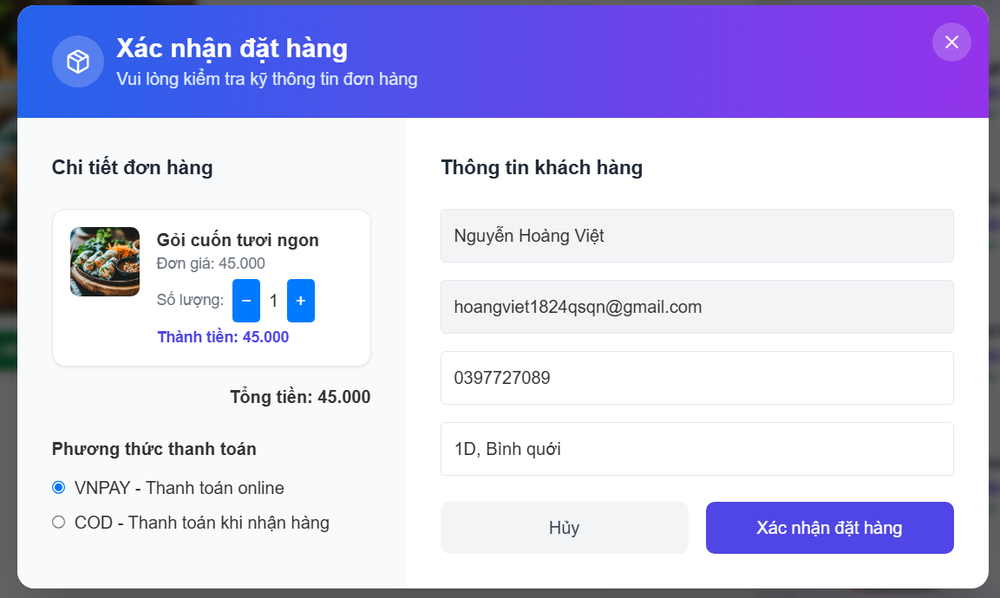
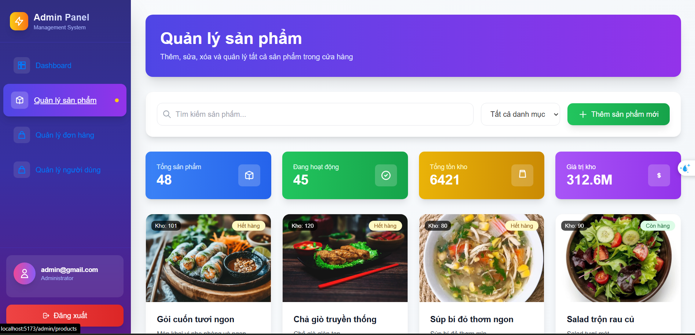
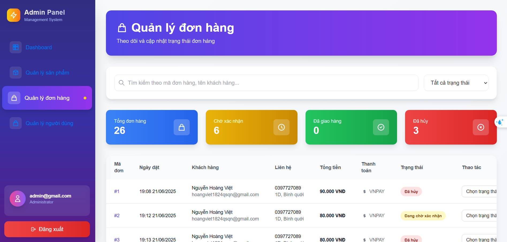
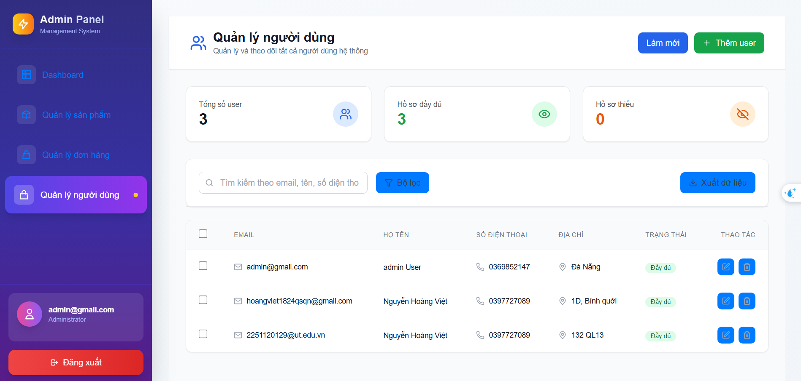
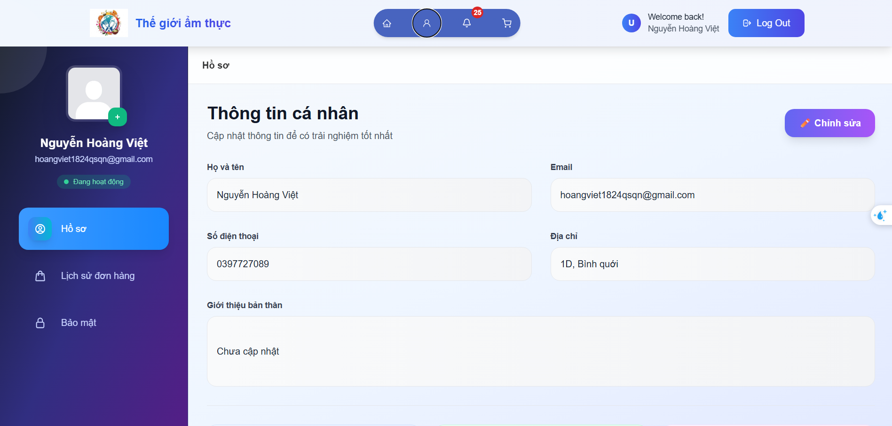
Phần frontend được xây dựng trên ReactJS với Tailwind CSS, tích hợp REST API do team backend Spring Boot/Hibernate/Spring Security cung cấp, và hiển thị biểu đồ thống kê bằng Chart.js. Vai trò của tôi tập trung vào giao diện, trải nghiệm người dùng và đồng bộ dữ liệu với backend.
Amazon EC2: Khởi tạo Ubuntu Server 22.04 LTS trên instance type m7i-flex.large (2 vCPU, 20GB SSD). Security Group chỉ mở port 22 (SSH, giới hạn IP) và port 80 (HTTP public), giảm attack surface.
AWS IAM: Thiết lập IAM Role trực tiếp gắn cho EC2 thay vì lưu Access Key/Secret Key trong source code, đồng thời cấp các policy cần thiết như AmazonS3FullAccess, CloudWatchAgentServerPolicy và AmazonSSMManagedInstanceCore.
AWS Systems Manager: Cấu hình Session Manager để quản trị EC2 từ trình duyệt, mã hóa hoàn toàn, không cần mở SSH công khai.
Amazon S3: Tích hợp AWS SDK for JavaScript v3 và Multer vào backend để upload/xóa ảnh sản phẩm, lưu URL ảnh trong MongoDB để hiển thị lên website.
Amazon CloudWatch: Giám sát log và metric hệ thống sau khi deploy, theo dõi CPU, memory và trạng thái instance.
Docker & Docker Compose: Đóng gói frontend và backend thành các container riêng biệt, viết Dockerfile riêng và dùng Docker Compose quản lý multi-container. Frontend chạy trên Nginx để phục vụ production hiệu quả.
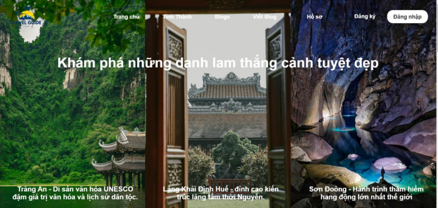
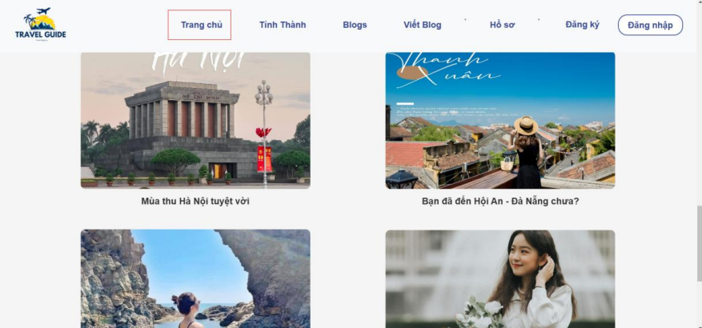
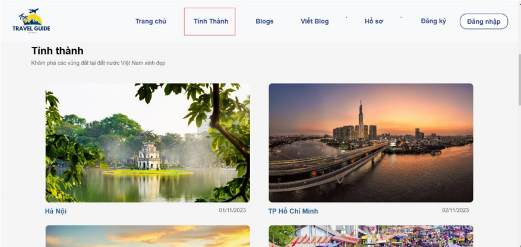
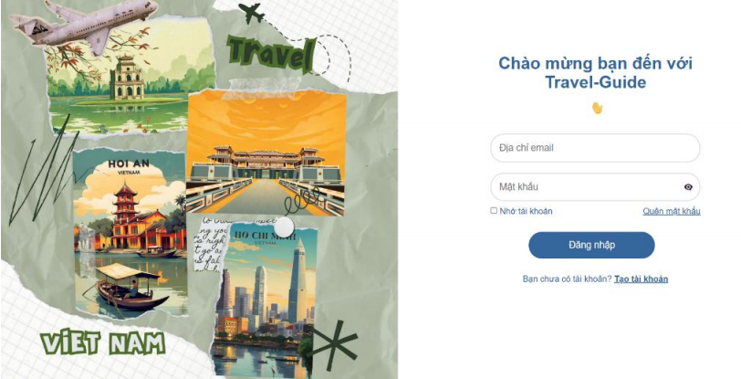
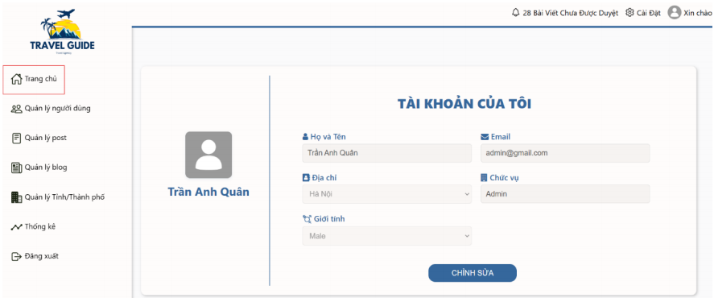
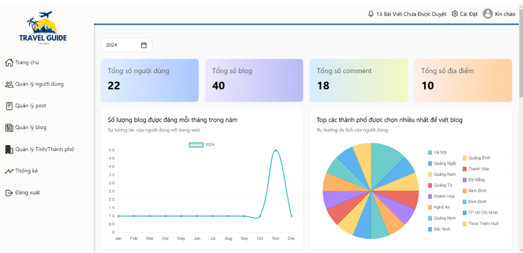
Vai trò của tôi trong dự án là phát triển UI, tạo trang blog responsive, tích hợp dữ liệu từ backend do team cung cấp và hỗ trợ trải nghiệm đăng nhập, quản lý nội dung và xem thống kê trên frontend. Phần kiến trúc backend MVC/PHP là do team khác thực hiện.
Đây là phiên bản trực tiếp của hệ thống Toast Notification tự viết được áp dụng trong dự án SmartTask. Hệ thống được tối ưu hóa khả năng tiếp cận (Accessibility WCAG 2.1 AA) cho trình đọc màn hình và điều hướng bàn phím.
Tôi đang tìm kiếm cơ hội phát triển với vai trò Full-stack Engineer, học hỏi và đóng góp cho dự án của bạn. Liên hệ ngay để trao đổi!
Gửi Email cho tôi